서울시 버스정류장의 실시간 버스 도착 정보를 보여주는 BIS 전광판입니다. 원하는 정류장 이름 또는 정류장 ID를 알려주시면 그 정류장에 맞춰 제작해드립니다. USB로 정류장을 직접 변경하거나, 와이파이로 무선 조작하는 방식도 선택할 수 있습니다.
이미 주문했어요 · 주문 조회 →주문번호
주문번호와 주문할 때 적은 카톡 닉네임을 넣어 주세요. 이 브라우저에 저장된 주문서를 조회합니다. 제작 진행 상황은 판매자 카톡으로 확인해주세요.
상태
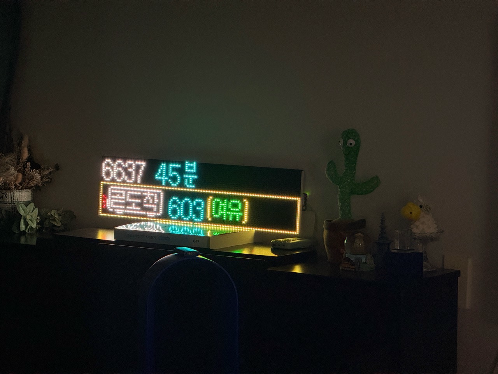
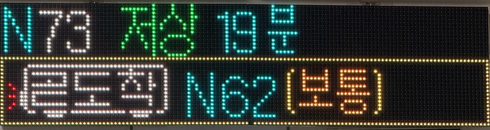
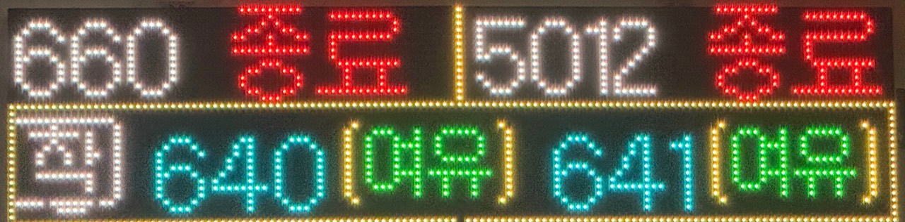
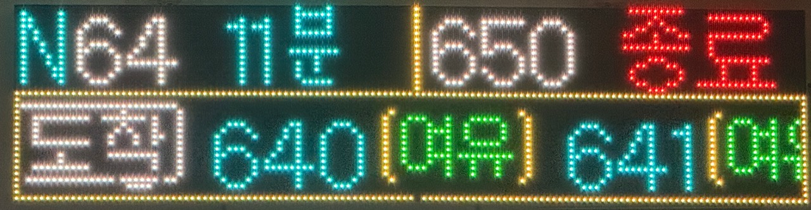
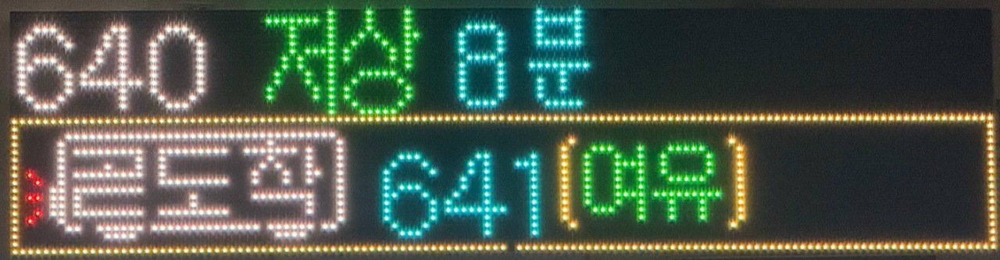
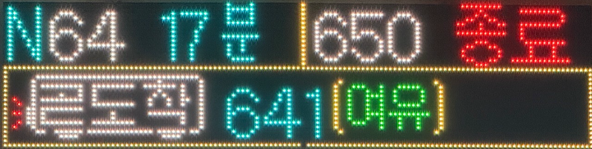
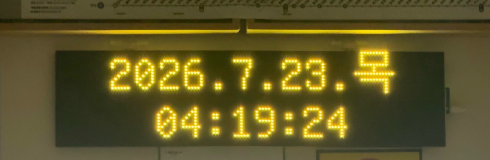
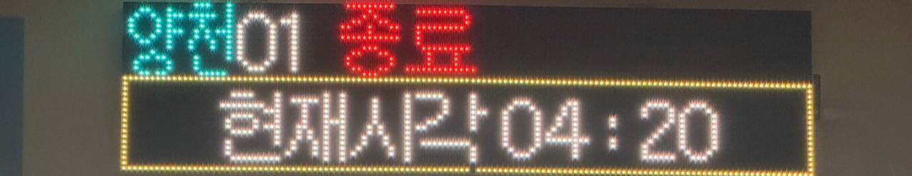
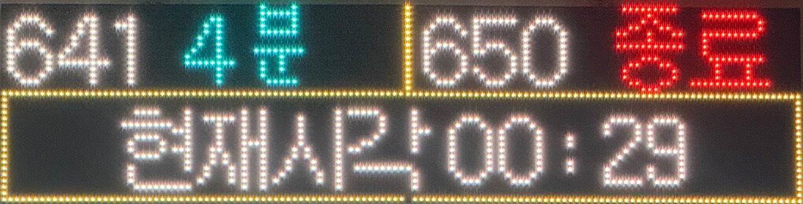
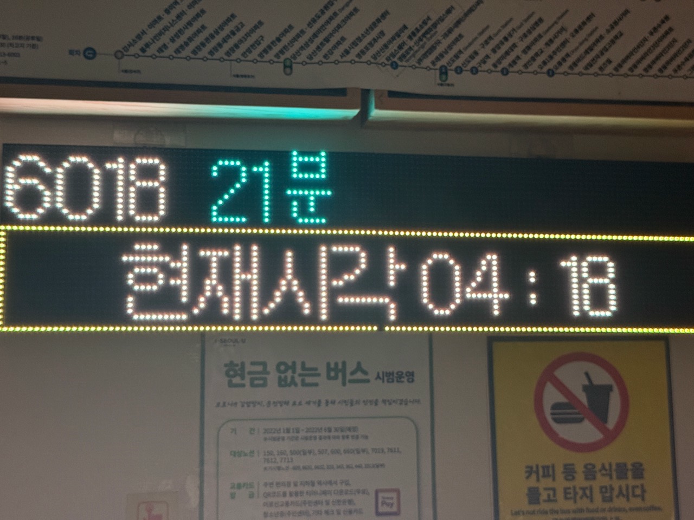
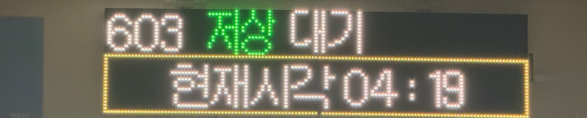
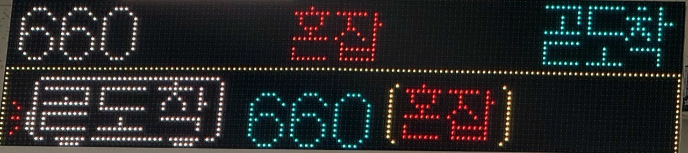
아래 두 장은 실제 정류장에 설치된 안내판입니다.
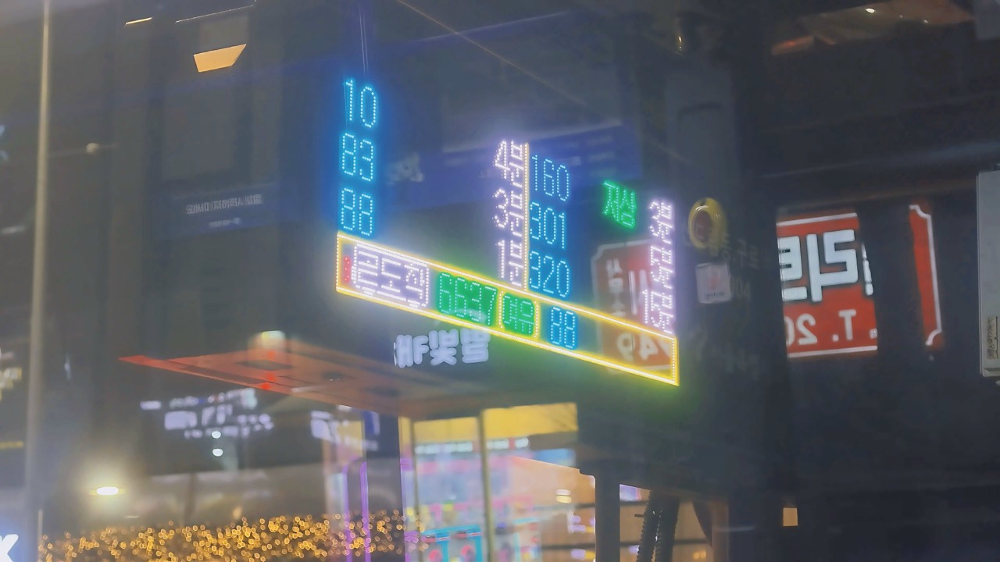
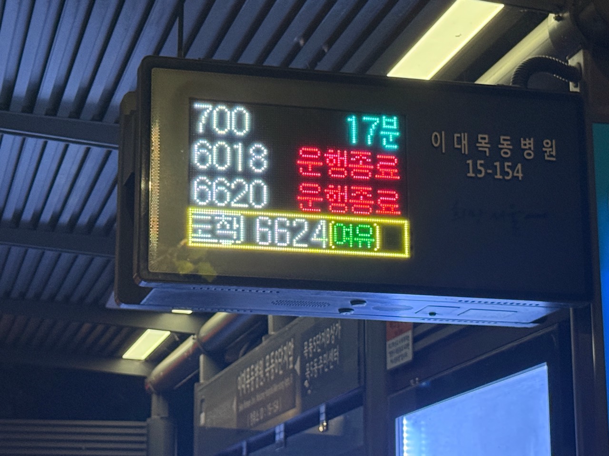